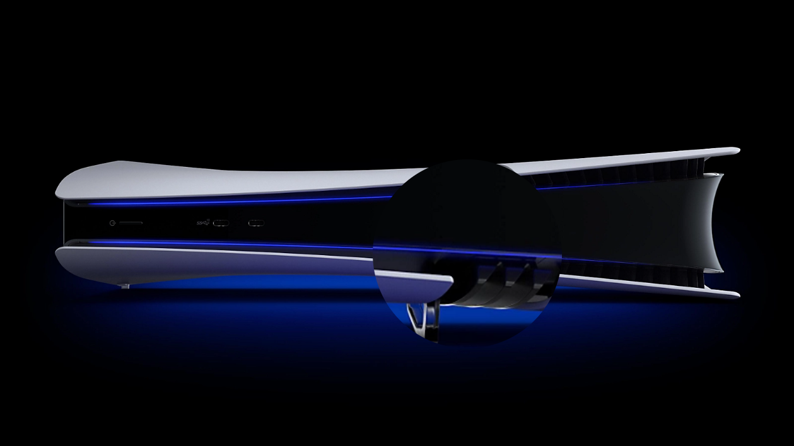

PWA
Autor: Carlos Adrián Serrano Samayoa

¿Qué tiene de nuevo el PS5 PRO?
¿Qué tiene de nuevo el PS5 PRO?
La PlayStation 5 Pro es una versión mejorada de la PS5 estándar, con un enfoque en mejorar el rendimiento gráfico y ofrecer una experiencia de juego más fluida. Algunas de sus características más destacadas incluyen un GPU con 67% más unidades de cómputo y un 45% más de rapidez en el renderizado, lo que permitirá gráficos más detallados y mejor tasa de fotogramas por segundo. Además, contará con tecnología avanzada de trazado de rayos y un sistema de escalado de resolución impulsado por IA llamado PlayStation Spectral Super Resolution (PSSR), que mejorará aún más la calidad visual de los juegos.